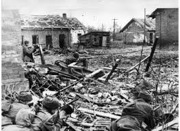
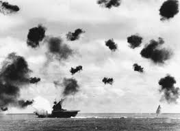
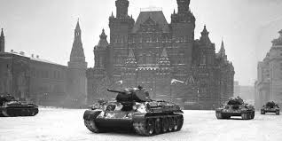

Battle of Stalingrad
The Battle of Stalingrad (17 July 1942 – 2 February 1943) was a major battle on the Eastern Front of World War II, beginning when Nazi Germany and its Axis allies attacked and became locked in a protracted struggle with the Soviet Union for control over the Soviet city of Stalingrad in what is now southern Russia. The battle was characterized by fierce close-quarters combat and direct assaults on civilians in aerial raids; the battle epitomized urban warfare with it being the single largest and costliest urban battle in military history. It was the bloodiest and fiercest battle of the entirety of World War II—and arguably in all of human history—as both sides suffered tremendous casualties amidst ferocious fighting in and around the city.Today, the Battle of Stalingrad is commonly regarded as the turning point in the European theatre of World War II, as Germany's Oberkommando der Wehrmacht was forced to withdraw a considerable amount of military forces from other regions to replace losses on the Eastern Front. By the time the hostilities ended, the German 6th Army and 4th Panzer Army had been destroyed and Army Group B was routed. The Soviets' victory at Stalingrad shifted the Eastern Front's balance of power in their favour, while also boosting the morale of the Red Army. Both sides placed great strategic importance on Stalingrad, for it was the largest industrial centre of the Soviet Union and an important transport hub on the Volga River controlling Stalingrad meant gaining access to the oil fields of the Caucasus and having supreme authority over the Volga River. The city also held significant symbolic importance because it bore the name of Joseph Stalin, the incumbent leader of the Soviet Union. As the conflict progressed, Germany's fuel supplies dwindled and thus drove it to focus on moving deeper into Soviet territory and taking the country's oil fields at any cost. The German military first clashed with the Red Army's Stalingrad Front on the distant approaches to Stalingrad on 17 July. On 23 August, the 6th Army and elements of the 4th Panzer Army launched their offensive with support from intensive bombing raids by the Luftwaffe, which reduced much of the city to rubble. The battle soon degenerated into house-to-house fighting, which escalated drastically as both sides continued pouring reinforcements into the city. By mid-November, the Germans, at great cost, had pushed the Soviet defenders back into narrow zones along the Volga's west bank. However, winter set in within a few months and conditions became particularly brutal, with temperatures often dropping tens of degrees below freezing. In addition to fierce urban combat, brutal trench warfare was prevalent at Stalingrad as well. On 19 November, the Red Army launched Operation Uranus, a two-pronged attack targeting the Romanian armies protecting the 6th Army's flanks.The Axis flanks were overrun and the 6th Army was encircled. Adolf Hitler was determined to hold the city for Germany at all costs and forbade the 6th Army from trying a breakout; instead, attempts were made to supply it by air and to break the encirclement from the outside. Though the Soviets were successful in preventing the Germans from making enough airdrops to the trapped Axis armies at Stalingrad, heavy fighting continued for another two months. On 2 February 1943, the 6th Army, having exhausted their ammunition and food, finally capitulated after several months of battle, making it the first of Hitler's field armies to have surrendered. In modern-day Russia, the legacy of the Red Army's victory at Stalingrad is commemorated among the Days of Military Honour. It is also well known in many other countries that belonged to the Allied powers, and has thus become ingrained in popular culture. Likewise, in a number of the post-Soviet states, the Battle of Stalingrad is recognized as an important aspect of what is known as the Great Patriotic War (Information from WIki).
Battle of Midway
The Battle of Midway was a major naval battle in the Pacific Theater of World War II that took place 4–7 June 1942, six months after the Empire of Japan's attack on Pearl Harbor and one month after the Battle of the Coral Sea. The U.S. Navy under Admirals Chester W. Nimitz, Frank J. Fletcher, and Raymond A. Spruance defeated an attacking fleet of the Imperial Japanese Navy under Admirals Isoroku Yamamoto, Chūichi Nagumo, and Nobutake Kondō north of Midway Atoll, inflicting devastating damage on the Japanese fleet. Military historian John Keegan called it "the most stunning and decisive blow in the history of naval warfare", while naval historian Craig Symonds called it "one of the most consequential naval engagements in world history, ranking alongside Salamis, Trafalgar, and Tsushima Strait, as both tactically decisive and strategically influential." In response to the Doolittle air raid on Tokyo, the Japanese leadership planned a "barrier" strategy to extend Japan's defensive perimeter. They hoped to lure the American aircraft carriers into a trap, clearing the seas for Japanese attacks on Midway, Fiji, Samoa, and Hawaii. The plan was undermined by faulty Japanese anticipations of the American reaction and poor initial dispositions. Crucially, U.S. cryptographers were able to determine the date and location of the planned attack, enabling the forewarned United States Navy to prepare its own ambush. Four Japanese and three American aircraft carriers participated in the battle. The Japanese fleet carriers—Akagi, Kaga, Sōryū, and Hiryū, part of the six-carrier force that had attacked Pearl Harbor six months earlier—were sunk, as was the heavy cruiser Mikuma. The United States lost the carrier Yorktown and the destroyer Hammann, while the carriers USS Enterprise and USS Hornet survived the battle fully intact. After Midway and the exhausting attrition of the Solomon Islands campaign, Japan's capacity to replace its losses in materiel (particularly aircraft carriers) and men (especially well-trained pilots and maintenance crewmen) rapidly became insufficient to cope with mounting casualties, while the United States' massive industrial and training capabilities made losses far easier to replace. The Battle of Midway, along with the Guadalcanal campaign, is widely considered a turning point in the Pacific War ( Information from Wiki).
Battle of Moscow
The Battle of Moscow was a military campaign that consisted of two periods of strategically significant fighting on a 600 km (370 mi) sector of the Eastern Front during World War II, between September 1941 and January 1942. The Soviet defensive effort frustrated Hitler's attack on Moscow, the capital and largest city of the Soviet Union. Moscow was one of the primary military and political objectives for Axis forces in their invasion of the Soviet Union. The German Strategic Offensive, named Operation Typhoon, called for two pincer offensives, one to the north of Moscow against the Kalinin Front by the 3rd and 4th Panzer Armies, simultaneously severing the Moscow–Leningrad railway, and another to the south of Moscow Oblast against the Western Front south of Tula, by the 2nd Panzer Army, while the 4th Army advanced directly towards Moscow from the west. Initially, the Soviet forces conducted a strategic defence of the Moscow Oblast by constructing three defensive belts, deploying newly raised reserve armies, and bringing troops from the Siberian and Far Eastern Military Districts. As the German offensives were halted, a Soviet strategic counter-offensive and smaller-scale offensive operations forced the German armies back to the positions around the cities of Oryol, Vyazma and Vitebsk, and nearly surrounded three German armies. It was a major setback for the Germans, and the end of their belief in a swift German victory over the USSR.[17] As a result of the failed offensive, Field Marshal Walther von Brauchitsch was dismissed as supreme commander of the German Army, with Hitler replacing him in the position (Information from Wiki).